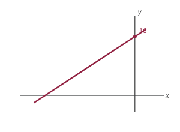
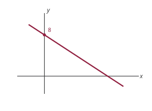
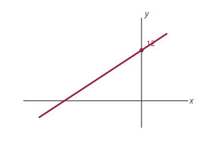

Practice Problems 2
Lecture 2: Functions, Summation Notation, and Logical Conditions
Problem numbers refer to the textbook (Chiang & Wainwright, 4th edition). These are not graded, but you should attempt them all before the quiz. Each problem has a Solution toggle, and a few have one per part: try it yourself first, then expand to check.
Exercise 2.4
5. If the domain of the function \(y=5+3x\) is the set \(\{x \mid 1 \leq x \leq 9\}\), find the range of the function and express it as a set.
Solution
For this function, when \(x=1\), \(y=8\), and when \(x=9\), \(y=32\). So the range is \[ f(X) =\{y \mid 8 \leq y \leq 32\} \]
Note: it is not always the case that extreme values of the domain correspond to extreme values of the range. For example, consider \(y=x^{2}\) with domain \(\{x \mid -2 \leq x \leq 2\}\); the range here is \(\{y \mid 0 \leq y \leq 4\}\).
7. In the theory of the firm, economists consider the total cost \(C\) to be a function of the output level \(Q\): \(C=f(Q)\).
- According to the definition of a function, should each cost figure be associated with a unique output level?
- Should each level of output determine a unique cost figure?
Solution
- No
- Yes
8. If an output level \(Q_1\) can be produced at a cost of \(C_1\), then it must also be possible (by being less efficient) to produce \(Q_1\) at a cost of \(C_1+\$1\), or \(C_1+\$2\), and so on. Thus it would seem that output \(Q\) does not uniquely determine total cost \(C\). If so, to write \(C=f(Q)\) would violate the definition of a function. How, in spite of this reasoning, would you justify the use of the function \(C=f(Q)\)?
Solution
For each output level, we would want to produce at the lowest cost. The cost function \(C=f(Q)\) records that minimum cost, which is unique.
Exercise 2.5
1. Graph the following functions and find their inverse functions.
- \(y = 16 + 2x\)
Solution
\(f^{-1}(y) = \dfrac{y-16}{2}\)

- \(y = 8-2x\)
Solution
\(f^{-1}(y) = \dfrac{8-y}{2}\)

- \(y = 2x+12\)
Solution
\(f^{-1}(y) = \dfrac{y-12}{2}\)

Exercise 4.2
6. Expand the following summation expressions:
- \(\sum_{i=2}^5 x_i\)
- \(\sum_{i=5}^8 a_i x_i\)
- \(\sum_{i=1}^4 b x_i\)
- \(\sum_{i=1}^n a_i x^{i-1}\)
- \(\sum_{i=0}^3(x+i)^2\)
Solution
- \(x_{2}+x_{3}+x_{4}+x_{5}\)
- \(a_{5} x_{5}+a_{6} x_{6}+a_{7} x_{7}+a_{8} x_{8}\)
- \(b x_{1}+b x_{2}+b x_{3}+b x_{4}\)
- \(a_{1}+a_{2} x+a_{3} x^{2}+\ldots+a_{n} x^{n-1}\)
- \(x^{2}+(x+1)^{2}+(x+2)^{2}+(x+3)^{2}\)
8. Show that the following are true:
- \(\left(\sum_{i=0}^n x_i\right)+x_{n+1}=\sum_{i=0}^{n+1} x_i\)
Solution
\[ \left(\sum_{i=0}^{n} x_{i} \right)+x_{n+1} = x_{0}+x_{1}+x_{2}+\ldots+x_{n+1} = \sum_{i=0}^{n+1} x_{i} \]
- \(\sum_{j=1}^n a b_j y_j=a \sum_{j=1}^n b_j y_j\)
Solution
\[ \begin{aligned} \sum_{j=1}^{n} a b_{j} y_{j} &= a b_{1} y_{1}+a b_{2} y_{2}+\ldots+a b_{n} y_{n} \\ &= a\left(b_{1} y_{1}+b_{2} y_{2}+\ldots+b_{n} y_{n}\right) \\ &= a \sum_{j=1}^{n} b_{j} y_{j} \end{aligned} \]
- \(\sum_{j=1}^n\left(x_j+y_j\right)=\sum_{j=1}^n x_j+\sum_{j=1}^n y_j\)
Solution
\[ \begin{aligned} \sum_{j=1}^{n}\left(x_{j}+y_{j}\right) &= \left(x_{1}+y_{1}\right)+\left(x_{2}+y_{2}\right)+\ldots+\left(x_{n}+y_{n}\right) \\ &= x_{1}+x_{2}+\ldots+x_{n}+y_{1}+y_{2}+\ldots+y_{n} \\ &= \sum_{j=1}^{n} x_{j}+\sum_{j=1}^{n} y_{j} \end{aligned} \]
Exercise 5.1
1. In the following paired statements, let \(p\) be the first statement and \(q\) the second. Which is true for each case: \(p \Rightarrow q\), \(p \Leftarrow q\), or \(p \Leftrightarrow q\)?
- It is a holiday; it is Thanksgiving Day.
- A geometric figure has four sides; it is a rectangle.
- Two ordered pairs \((a, b)\) and \((b, a)\) are equal; \(a\) is equal to \(b\).
- A number is rational; it can be expressed as a ratio of two integers.
- A \(4 \times 4\) matrix is nonsingular; the rank of the \(4 \times 4\) matrix is 4. (skip for now)
- The gasoline tank in my car is empty; I cannot start my car.
- The letter is returned to the sender with the marking “addressee unknown”; the sender wrote the wrong address on the envelope.
Solution
- \(q \implies p\)
- \(q \implies p\)
- \(q \iff p\)
- \(q \iff p\)
- \(q \iff p\)
- \(p \implies q\)
- \(q \implies p\)